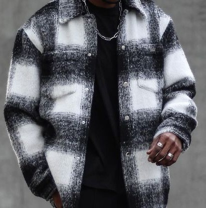
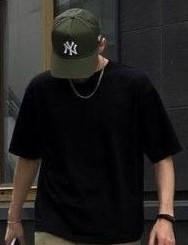

Featured Speakers

Lawrence Lessig
Founder, Creative Commons
Legal scholar and political activist leading the open culture movement through licensing innovation.
Heather Joseph
Director, SPARC
Open access champion empowering educational and scholarly communities worldwide.

Joi Ito
MIT Media Lab
Entrepreneur and futurist building platforms for collaboration, science, and digital openness.

Carolina Botero
Fundación Karisma
for digital rights in Latin America, focused on equity and openness in tech policy.
Heather Joseph
Director, SPARC
Open access champion empowering educational and scholarly communities worldwide.
Carolina Botero
Fundación Karisma
for digital rights in Latin America, focused on equity and openness in tech policy.